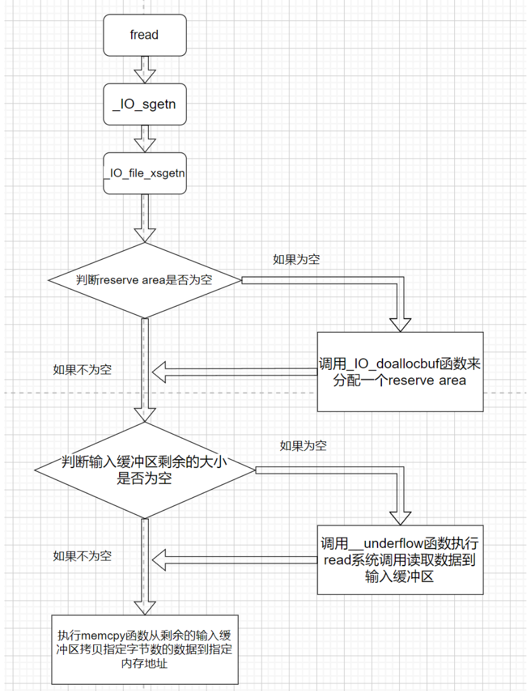

IO学习--源码分析fread函数
上一篇分析的是fopen函数，这次来分析下fread函数。
IO学习–源码调试fopen函数
前置知识：
在分析fread函数时，应该先明确一下输入缓冲区是怎么来的。
首先fread函数会先将数据读到输入缓冲区中，然后从输入缓冲区中执行memcpy函数，拷贝一定字节的数据到我们指定的内存地址上。而这个输入缓冲区是从哪到哪呢？由两个指针分别声明了这片区域的开始和结束，他们分别叫做**_IO_read_base和_IO_read_end，他们之间的区域就是输入缓冲区**。这样看起来似乎还需要一个输出缓冲区，难道需要malloc申请两个堆块来分别表示输入缓冲区和输出缓冲区么？非也，其实malloc函数自始至终只申请了一个堆块，这个堆块的区域也叫做reserve area，而_IO_buf_base和_IO_buf_end两个指针则分别声明了这个reserve area的始末。然后将 _IO_read_ptr; _IO_read_end; _IO_read_base; _IO_write_base; _IO_write_ptr; _IO_write_end;这六个指针全部初始化为了_IO_buf_base的值，现在的输入缓冲区和输出缓冲区还不存在(因为现在 _IO_read_end和 _IO_read_base的值相同)，以输入缓冲区为例，读入数据时是执行了系统调用read，而此时的数据是在reserve area中，紧接着 _IO_read_end就会加上刚刚读入的数据的个数，那么此时 _IO_read_end和 _IO_read_base的值变的不同了。而现在这二者之间的区域就成为输入缓冲区。
再提一下_IO_FILE结构体中的一些指针(如下)
char* _IO_read_ptr; /* Current read pointer */ |
其中_IO_buf_base 和 _IO_buf_end两个指针的作用分别是标明reserve area的始末。_IO_read_base 和 _IO_read_end两个指针的作用分别是标明输入缓冲区的始末(write那两个指针同理)，现在假设有一个30字节的flag文件，然后我连续执行两次fread函数，每次从文件中只读10字节，那么第二次执行fread函数是从哪开始读呢，很明显并不是文件的开始来读取了，而是接着上回fread函数读到的位置，继续读10字节数据。但我们怎么去记录上回fread函数读到哪了呢，这就需要用到**_IO_read_ptr指针了，它是来记录下一次数据应该从输入缓冲区的哪里开始读了。也就是说_IO_read_base 和 _IO_read_ptr 之间的区域是已经使用了的输入缓冲区，而 _IO_read_ptr 和 _IO_read_end之间的区域是输入缓冲区的剩余部分(也就是还未使用部分)**。
通过上面这两段文字，应该可以对刚学习IO的师傅对_IO_FILE结构体中表示缓冲区位置的指针有一些了解了。
同时这次还要提到vtable，它是_IO_FILE_plus结构体中的一个字段，也是一个虚表指针。它指向了_IO_jump_t结构体
struct _IO_FILE_plus |
对于_IO_jump_t结构体，我目前的理解它就是一个跳转表，这里放的都是函数指针。通过不同的偏移获取不同的函数指针，然后将其调用。
struct _IO_jump_t |
整体流程


上面第一张图片是fread函数的整体流程，第二张图片是根据我下面写的这个源代码对应的函数调用流程(调试的时候结合这两个图片，可以对自己调试到哪部分有个比较清楚的认知)。
源代码：
|
本文的源代码以及调试的程序所依赖的libc都为2.23版本的
源码分析&&源码调试
先看fread函数源码，发现它的代码很短(如下)，这里主要就是调用了_IO_sgetn函数

查看_IO_sgetn函数后，发现它只调用了vtable中的_IO_XSGETN

然后再溯源的话就是几个宏定义，代码如下：
我简单分析一下上述部分，核心就是_IO_JUMPS_FUNC(THIS)返回了_IO_jump_t地址，由于JUMP2第一个参数就是__xsgetn，所以->FUNC访问的就是_IO_jump_t结构体中__xsgetn,然后我们用gdb看下此时的_IO_jump_t结构体中的值(如下)，因此最后我们跳转到了0x7ffff7a86df0处。

然后我们看一下汇编如何实现的这里。

先是让rdi+0xd8指向的内容赋值给了rax寄存器。而此时的rdi就是_IO_list_all的值，加上0xd8这个偏移，正好就是_IO_FILE_plus结构体中的vtable字段。加上[]寻址后，也就是拿到了_IO_jump_t结构体的地址。
然后第二条指令是mov rax, qword ptr [rax + 0x40]，而_IO_jump_t结构体中偏移0x40的字段正好就是__xsgetn(如下图)

最后加上[]寻址，rax为0x7ffff7a86df0(如下图)

如此，最终jmp rax，成功跳转到_IO_file_xsgetn函数(如下图)，而这个_IO_file_xsgetn函数也是fread函数实现的核心函数。

_IO_file_xsgetn函数
_IO_file_xsgetn函数主要分为三个部分(下面先是对三个部分的简单概括，后面是对三个部分的具体分析)：
1、先是去判断fp->_IO_buf_base(reserve area)是否为空，如果为空的话，就说明resever area还没有被分配出来，因此去调用_IO_doallocbuf函数来分配一个reserve area（源码如下）
if (fp->_IO_buf_base == NULL) |
2、如果输入缓冲区剩余的大小不为空，并且还需要读入一定字节的数据，就调用memcpy函数，将输入缓冲区的数据复制到指的的内存处。have为输入缓冲区剩余大小，want为还要读入的字节数。（源码如下）
have = fp->_IO_read_end - fp->_IO_read_ptr; |
3、如果输入缓冲区剩余大小为0，并且存在resever area(这片区域就是fp->_IO_buf_end - fp->_IO_buf_base)，且我们需求size比resever area区域小。那么调用__underflow函数执行系统调用read读入一定字节的数据到resever area中。
if (fp->_IO_buf_base |
分配resever area
先来看第一部分，也就是如果不存在resever area的情况下调用_IO_doallocbuf函数来分配一个resever area。
void |
因为是第一次执行fread函数，所以肯定是会调用_IO_doallocbuf 函数的。通过观察上面的源码和下面的图片发现在这个_IO_doallocbuf函数中又调用了_IO_FILE的vtable中的IO_file_doallocate函数(如下图)

我这里就不放IO_file_doallocate函数的源代码了，调试看一下流程吧。

si进入IO_file_doallocate函数后，又调用了vtable中的_IO_file_stat函数。

而后又执行了系统调用fstat，这个系统调用是来获取文件状态，并且初始化st结构体的。可以看到此时的st_blksize为4096(如下图)

而这个st_blksize也就是接下来malloc申请的内存大小（也就是reserve area的大小）

当malloc函数将内存申请出来后，调用了vtable中的_IO_setb函数(如下)

这个函数的代码很短
void |
通过阅读上面的源代码就明白，这个函数主要就是对_IO_buf_base和_IO_buf_end指针进行赋值。至此_IO_doallocbuf函数就结束了。_IO_doallocbuf函数主要是将resever area申请出来(大小为0x1000),并且对_IO_buf_base和_IO_buf_end指针进行赋值。
从输入缓冲区中拷贝数据
第二部分是最简单的，结合下面的源码很容易分析出来，拷贝我们指定的字节的内容从输入缓冲区的剩余部分到指定地址，但如果输入缓冲区剩余大小为空的话，就无法去拷贝。
(have为输入缓冲区剩余大小，want为还要读入的字节数)
have = fp->_IO_read_end - fp->_IO_read_ptr; |
执行系统调用read读入数据
第三部分的核心是__underflow函数。它先是经过一些检查后，去调用了vtable中的_IO_file_underflow函数。检查如下，调用vtable中的_IO_file_underflow函数是在__underflow函数将要返回之时执行的_IO_UNDERFLOW (fp)。
int |

因为宏定义# define _IO_new_file_underflow _IO_file_underflow，所以_IO_file_underflow在源码中为_IO_new_file_underflow.
然后上来就是很多检查，不过根据程序当前的状态，直接跳过了前面的检查。先去执行了_IO_switch_to_get_mode 函数，该函数将fp->_IO_read_base进行了赋值，其他指针依然为0。
等到_IO_switch_to_get_mode函数执行结束，出来之后就是疯狂的对read和write字段进行赋值，这里都初始化为了_IO_buf_base，代码如下
fp->_IO_read_base = fp->_IO_read_ptr = fp->_IO_buf_base; |
此时的_IO_FILE结构体各个字段如下

然后此时调用了虚表中的_IO_file_read函数(如下图)

而后该函数进行了系统调用read，它的第二个参数也就是fp->_IO_buf_base的值，第三个参数就是fp->_IO_buf_end - fp->_IO_buf_base的值。此时也才终于将文件中的数据读入到了resever area中(我认为现在数据还并不是在输入缓冲区中，因为按照定义的话_IO_read_end _IO_read_base之间的才属于输入缓冲区，而现在还没有挪动_IO_read_end指针，因此严谨一些的话，现在数据是属于resever area中的)

而后_IO_SYSREAD函数返回，read系统调用读入的字节数返回给变量count。此时执行到fp->_IO_read_end += count才算是将_IO_read_end 的指针移动，现在可以说是刚刚写入的数据位于了输入缓冲区中。

由于第二部分和第三部分是位于while循环中的，因此第三部分执行后，再次来到了第二部分。这回fp->_IO_read_end - fp->_IO_read_ptr的值是存在的，所以这次就可以进入if去执行memcpy函数了(如下)

兜兜转转了很久，一直都是围绕着数据从文件中写到输入缓冲区中的操作，终于到了memcpy函数，通过这个拷贝函数，我们就可以将输入缓冲区中的数据拷贝指定的字节数到指定的地址，最后将指针_IO_read_ptr进行更新(如下图)，同时将want置零。

该fread函数的源码分析至此就结束了，看一下最后的_IO_FILE结构体

总结fread函数调用流程：
先判断是否存在reserve area(没有的话就malloc申请出来)，再去判断输入缓冲区是否还有剩余区域，如果有的话就直接拷贝输入缓冲区剩余部分的数据，如果没有的话，执行系统调用read从文件中读取数据到输入缓冲区中，然后循环再次去执行memcpy函数拷贝输入缓冲区的数据。
因为是初学IO，因此有些地方可能会理解有误，如果存在问题欢迎师傅们斧正
参考文章：
IO FILE之fread详解 - 安全客，安全资讯平台 (anquanke.com)